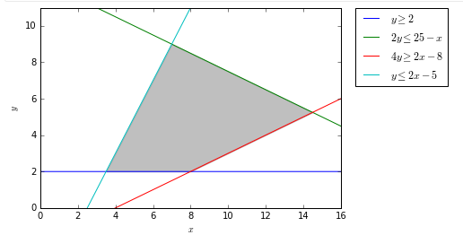

Best Linear Programming Resource I've Seen
Not a lot that I could say on the matter that wasn’t fantastically-handled by this blog series.
Instead, I’ll follow along the posts, distilling key principles and elaborating where needed.
Part 1
In a valid system of linear constraints, there’s some region of feasible solutions, as the author represents in gray.
from IPython.display import Image
Image('images/simple_linear_case.PNG')
Then, as they show by inspection, the maxima of linear programming problems lies at the corners of these areas.
Of course, the reason that this whole problem space exists is because the notion of “corners” is trivial in 2D, but quickly gets unwieldy in higher dimensions
Part 2
The basic anatomy of using pulp is
- Instantiate your problem with the objective being either
LpMinimizeorLpMaximize - Build out your variables using
LpVariable. In the simple case, you can optionally constrain upper and lower bounds, as well as determine whether your variable isContinuous,Integer, orBinary - Use the
+=operator on yourLpProblemobject to define the equation you aim your optimization objective at - Use the
+=operator on yourLpProblemobject to add any constraints - Use the
.solve()method on yourLpProblemto solve, which modifies all of your variables in place - Print your solutions using a blend of
.varValandpulp.value
One thing that confused the hell out of me is how overloaded the += operator is. Let’s pull back the curtain a bit.
Using the same example as the author:
from pulp import LpProblem, LpVariable
prob = LpProblem('prob')
x = LpVariable('x', lowBound=0)
y = LpVariable('y', lowBound=0)Let’s look at some of the right sides of equations in ln [4]
4 * x + 3 * y4*x + 3*y + 0
2 * y <= 252*y + -25 <= 0
These look the same, as far as their __repr__ go, but looking at the type, we see
type(4 * x + 3 * y)pulp.pulp.LpAffineExpression
type(2 * y <= 25)pulp.pulp.LpConstraint
Peeking under the hood, there’s some really clever API design at play here. x is of class LpVariable
type(x)pulp.pulp.LpVariable
Which inherits from type LpElement
type(x).__bases__(pulp.pulp.LpElement,)
Which is loaded to the brim with dunder methods that use any arithmetic to return LpAffineExpression objects
Image('images/affine_expr.PNG')
So in that second example,
2 * y <= 252*y + -25 <= 0
The left side uses the __mul__ and becomes an LpAffineExpression
type(2 * y)pulp.pulp.LpAffineExpression
Then that object uses the __le__ method which returns an LpConstraint object
type(2 * y <= 25)pulp.pulp.LpConstraint
It’s worth noting that because of the Python operator precedence, the <=, >=, == operators happen pretty close to last, and thus we can also write that same expression backwards
type(25 >= y * 2)pulp.pulp.LpConstraint
Putting it all together, we’ll inspect the += dunder method for our LpProblem variable, prob.
As you can see (and as the author illustrates), calling += has different behavior depending on whether you’re using LpConstraint or LpAffineExpression.
Image('images/iadd.PNG')
Not terribly transparent, but it’s good design, once you know how it all fits together!
Part 3
This post is pretty straight-forward. Does a good job highlighting how calling the .solve() method updates everying in place, and retrieval via pulp.value and .varValue.
Part 4
This post highlights the finesse of structuring your Linear Programming problem, as well as introducing two other topics of note: LpVariable.dicts and lpSum
.dicts()
As you might expect, the literal construction of your problem can get unwieldy as you get more and more constraints. This is essentially a clever utility that lets you programmatically create LpVariable objects.
First, let’s look at the instantiation call. This is almost identical to our typical LpVariable call, including name, the bounds, and data type in cat. However, the key difference here is in the indexs argument. This works in concert with name to loop through your indexs iterable and generate unique variable names of the form name_index, as you can see below.
indexes = ['a', 'b', 'c']
test = LpVariable.dicts(name='test', indexs=indexes,
lowBound=0, cat='Continuous')
test{'a': test_a, 'b': test_b, 'c': test_c}
It’s worth noting that this operation returns a simple, vanilla dictionary
type(test)dict
Whose contents are all of type LpVariable
type(test['a'])pulp.pulp.LpVariable
and have been instantiated with the arguments found in the top-level call
test['a'].lowBound, test['a'].cat(0, 'Continuous')
And so in the example post, the author essentially does some list comprehension magic to make all n x m variables that are unique combinations of the sausage_types and ingredients.
Because this is a tuple of strings, it’s hashable, and becomes the key to the dictionary
import pulp
# Construct our decision variable lists
sausage_types = ['economy', 'premium']
ingredients = ['pork', 'wheat', 'starch']
ing_weight = pulp.LpVariable.dicts("weight kg",
((i, j) for i in sausage_types for j in ingredients),
lowBound=0,
cat='Continuous')
ing_weight{('economy', 'pork'): weight_kg_('economy',_'pork'),
('economy', 'wheat'): weight_kg_('economy',_'wheat'),
('economy', 'starch'): weight_kg_('economy',_'starch'),
('premium', 'pork'): weight_kg_('premium',_'pork'),
('premium', 'wheat'): weight_kg_('premium',_'wheat'),
('premium', 'starch'): weight_kg_('premium',_'starch')}
Behind the scenes, pulp string-ifies the combination of name and, as above, creates the variables with the correct arguments.
ing_weight['economy', 'pork']weight_kg_('economy',_'pork')
.lpSum()
This one wasn’t immediately obvious to me. Essentially, .lpSum() provides a similar means for programmatic criteria generation. To see why this is necessary, in our overall problem we’re trying to minimize cost, across 6 variables. But because there are 3 unique costs, there’s obviously a more elegant way to express the final cost than just writing all 6 of them out.
from pulp import lpSumfrom warnings import filterwarnings
filterwarnings('ignore')
model = pulp.LpProblem("Cost minimising blending problem", pulp.LpMinimize)So we do a simple list comprehension to express that, which gives us a tuple of 2 LpAffineExpressions
costs = [4.32 * ing_weight[(i, 'pork')]
+ 2.46 * ing_weight[(i, 'wheat')]
+ 1.86 * ing_weight[(i, 'starch')]
for i in sausage_types]
costs[4.32*weight_kg_('economy',_'pork') + 1.86*weight_kg_('economy',_'starch') + 2.46*weight_kg_('economy',_'wheat') + 0.0,
4.32*weight_kg_('premium',_'pork') + 1.86*weight_kg_('premium',_'starch') + 2.46*weight_kg_('premium',_'wheat') + 0.0]
type(costs[0])pulp.pulp.LpAffineExpression
Should be able to pipe that in, yeah?
model += (costs)---------------------------------------------------------------------------
TypeError Traceback (most recent call last)
<ipython-input-26-ff6b5f8a8a6d> in <module>
----> 1 model += (costs)
C:\Users\Nick\Anaconda3\lib\site-packages\pulp\pulp.py in __iadd__(self, other)
1360 self.objective.name = name
1361 else:
-> 1362 raise TypeError("Can only add LpConstraintVar, LpConstraint, LpAffineExpression or True objects")
1363 return self
1364
TypeError: Can only add LpConstraintVar, LpConstraint, LpAffineExpression or True objects
Nope. Instead, we’ll use lpSum(). I think what threw me for a loop was that this isn’t necessarily a sum– after all, aren’t there a number of multiplication terms?
Perhaps a more accurate name for this function would be LpAffineExpression.from_iter(), because it’s essentially there to allow you to assemble an LpAffineExpression object from an iterable of them, but alas, knowing what the lpSum function does, we can just think of as “a sum of affine expressions.”
model += (
pulp.lpSum([
4.32 * ing_weight[(i, 'pork')]
+ 2.46 * ing_weight[(i, 'wheat')]
+ 1.86 * ing_weight[(i, 'starch')]
for i in sausage_types])
)
modelCost_minimising_blending_problem:
MINIMIZE
4.32*weight_kg_('economy',_'pork') + 1.86*weight_kg_('economy',_'starch') + 2.46*weight_kg_('economy',_'wheat') + 4.32*weight_kg_('premium',_'pork') + 1.86*weight_kg_('premium',_'starch') + 2.46*weight_kg_('premium',_'wheat') + 0.0
VARIABLES
weight_kg_('economy',_'pork') Continuous
weight_kg_('economy',_'starch') Continuous
weight_kg_('economy',_'wheat') Continuous
weight_kg_('premium',_'pork') Continuous
weight_kg_('premium',_'starch') Continuous
weight_kg_('premium',_'wheat') Continuous
Finally, we can see that the author uses this same function to generate multiple constraints as well
model += pulp.lpSum([ing_weight['economy', j] for j in ingredients]) == 350 * 0.05
model += pulp.lpSum([ing_weight['premium', j] for j in ingredients]) == 500 * 0.05
modelCost_minimising_blending_problem:
MINIMIZE
4.32*weight_kg_('economy',_'pork') + 1.86*weight_kg_('economy',_'starch') + 2.46*weight_kg_('economy',_'wheat') + 4.32*weight_kg_('premium',_'pork') + 1.86*weight_kg_('premium',_'starch') + 2.46*weight_kg_('premium',_'wheat') + 0.0
SUBJECT TO
_C1: weight_kg_('economy',_'pork') + weight_kg_('economy',_'starch')
+ weight_kg_('economy',_'wheat') = 17.5
_C2: weight_kg_('premium',_'pork') + weight_kg_('premium',_'starch')
+ weight_kg_('premium',_'wheat') = 25
VARIABLES
weight_kg_('economy',_'pork') Continuous
weight_kg_('economy',_'starch') Continuous
weight_kg_('economy',_'wheat') Continuous
weight_kg_('premium',_'pork') Continuous
weight_kg_('premium',_'starch') Continuous
weight_kg_('premium',_'wheat') Continuous
Part 5
Finally, this post– and the one after it– bring it all together, showing how to interface between pulp and a more-traditional pandas workflow.
I want to put particular emphasis on how well-designed keys for LpVariable.dicts allows the author to simultaneously interface with the pandas.DataFrame that houses our optimization criteria, as well as the pulp objects that he’s constructing. For instance, the overall problem statement is “minimize all costs”, which is achieved through their simple model instantiation (model = LpProblem('Cost minimize', pulp.LpMinimize)) and this monster of a pulp.lpSum
model += pulp.lpSum(
[production[month, factory] * factories.loc[(month, factory), 'Variable_Costs']
for month, factory in factories.index]
+ [factory_status[month, factory] * factories.loc[(month, factory), 'Fixed_Costs']
for month, factory in factories.index]
)
This is actually pretty straight-forward to read when you deconstruct.
production[month, factory] and factory_status[month, factory] are two dicts of LpVariables and factories.loc[(month, factory), ...] just reference the relevant cells within the DataFrame to complete the equation.
Finally, the author goes through and tailors the constraints for each month/factory combination by going through and updating the records of the dictionary.
for month, factory in factories.index:
min_production = factories.loc[(month, factory), 'Min_Capacity']
max_production = factories.loc[(month, factory), 'Max_Capacity']
model += production[(month, factory)] >= min_production * factory_status[month, factory]
model += production[(month, factory)] <= max_production * factory_status[month, factory]
Building these dictionaries form LpVariable.dicts was handy for their organization and default behavior, but this step allows us to update, instead of building a whole mess of lpVariables from scratch, instantiating with the appropriate values of lowBound and upBound.
Aaaaand for good measure, creating the super-specific constraints in the problem statement are two simple dictionary calls
# Factory B is off in May
model += factory_status[5, 'B'] == 0
model += production[5, 'B'] == 0
The last post in his series is super interesting, but in my estimation, not so fundamental that I’ll elaborate in this notebook.